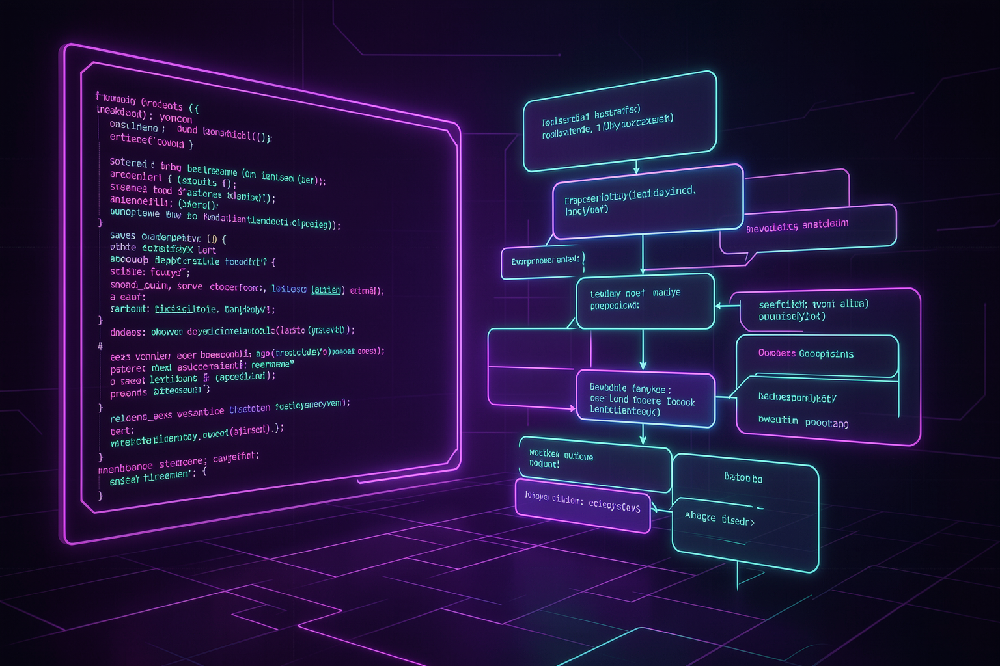
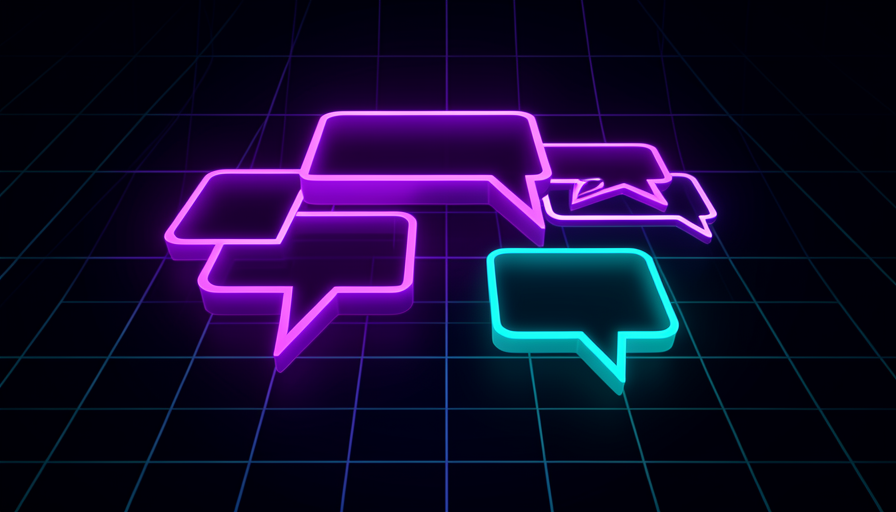
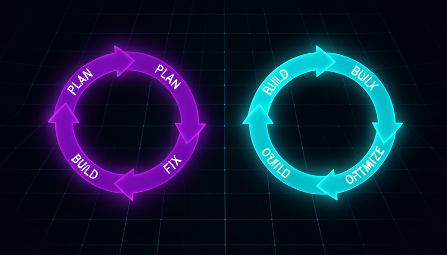
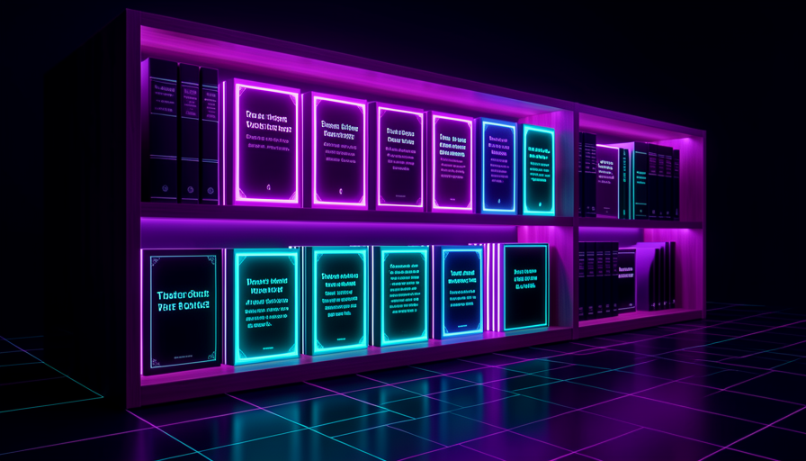

The path through track 3: from the patterns that guide every request, through the four-phase cycle, to the ready-to-copy-and-run library.
Learning path map
Detailed content

🎯 Prompting Patterns
The habits that set an ordinary request apart from one that delivers results: define the goal (not the steps), be specific about the output, plan before executing, give feedback instead of corrections, treat AI as a specialist, avoid the errors that cost the most tokens, and use the 12 tips checklist.
Describe the desired outcome instead of dictating the technical sequence — "identify technical questions and draft the response," not "use an IF node with regex."
Frees the AI to use its full range of knowledge; its approach is usually better than yours.
Outcome > instruction; don’t micromanage; the AI chooses the route.
Specify the format and destination exactly: “75 profiles,” “.docx in the saídas folder,” “table with columns for date, topic, summary.”
Vague output produces vague results and more back-and-forth (more tokens).
Exact quantity; format; file name; output folder.
Start in planning mode: the AI researches, asks questions, and proposes a plan; it only builds after you approve it.
You correct course in the plan (cheap) instead of in the middle of the build (expensive).
Research → questions → plan → approve → bypass to execute.
Give specific feedback ("I like the structure, but the tone is too formal") instead of a blunt correction ("it's wrong").
Feedback helps the AI adjust its reasoning; a bare correction just patches the output.
Specific; what you liked + what to change; feeds the improvement loop.
Talk to AI as you would to an experienced developer: you define the goal and context, and it chooses tools, writes, and debugs.
Micromanaging limits AI to what you know; delegating brings out its best.
Manager vs. developer; delegate the outcome; trust their expertise.
Token-burning patterns: reusing bloated conversations, not defining “done,” leaving MCP servers running, fixing the same thing three times.
Tokens cost money; and bloated context degrades quality (context rot).
One task per session; define “done”; use /clear when stuck.
A consolidation: 12 best practices (plan mode, clear objective, definition of done, context management, feedback, secrets in .env, testing with multiple inputs…).
Becomes a mental checklist you apply before each build.
12 tips; watch the build early; save tested skills; start fresh.

🔄 The Plan → Build → Troubleshoot → Optimize Cycle
The four phases of every build: plan (research + questions + plan), build (create and validate), what AI does NOT do (credentials, mapping), debug (return the error with context), optimize (improve in natural language), verify for real, and back up before making changes.
AI researches the right nodes/patterns, asks clarifying questions, and proposes a plan for you to approve.
It's the cheapest phase to change your mind; aligning here prevents rework.
Plan Mode; clarifying questions; approve the plan.
AI builds the workflow/project and validates what it can on its own; in bypass mode, it runs without interrupting you.
You watch early to learn and interrupt if things go off track.
Auto-validation; bypass permissions; monitor the build.
Some steps are manual: create OAuth credentials, create the destination spreadsheet, map fields.
Knowing the boundary keeps you from waiting for AI to do what only you can do.
Manual OAuth; create destination; map values; never put the key in chat.
When something breaks, copy the full error message + where it happened back to the AI, and ask it to diagnose and fix it.
An error without context leads to guessing; an error with context leads to a quick fix.
Message + node location; “why this happened”; rerun.
Once the basics are working, you improve it in layers: handle errors, improve the logic, polish the output, speed it up — all by chatting.
"Works" becomes "works well": edge cases, UX, efficiency.
Iterate in layers; priority order; one change at a time.
Test with real scenarios (including edge cases and out-of-scope cases), check numbers and facts, and require the agent to say "I don’t know."
A "green" flow can give the wrong answer; testing is what reveals it.
Real-world scenarios; verify facts; refuse to make things up; checklist for each test.
Before making any changes, duplicate or export (JSON) and establish a tested baseline.
You roll back without losing what was already working—and you don’t blame the new change for an old problem.
Export JSON; baseline; reversible; happy path preserved.

📚 Ready-to-Use Prompt Library (copy-run)
Each topic is a complete, real prompt with variable parts <assim>, the goal and how to verify it: setup & CLAUDE.md, connect a tool via MCP, create a workflow from scratch, debug an error, the 6 enhancements, create a skill, create a scheduled agent, and create a frontend + security audit.
A prompt to generate the CLAUDE.md (role, context, preferences, rules) at the root of a new project.
It’s the starting point for every project: the persistent system prompt.
Dedicated folder; Markdown; iterate on the file through conversation.
Prompt to install an MCP server (project-level), generate the .mcp.json, and read the key from .env — never from the chat.
It's how AI gets "arms": scraping the web, reading databases, talking to apps.
.mcp.json; project-level; key in .env; use /mcp to verify.
A complete opening prompt that describes the outcome, data source, and destination — letting the AI plan the architecture.
"One prompt to rule them all": getting started right saves back-and-forth.
Outcome + source + destination; let the AI ask questions; approve the plan.
A prompt template for pasting the error message + location + what you expected, and asking for a diagnosis, cause, and fix.
Turns “it errored” into an actionable request that AI can resolve quickly.
Literal error; context; "why"; don't change anything else.
Six prompts to improve an agent: no-match fallback, time filter, automated email filter, brand tone, customer name, confidence indicator.
It’s the leap from “it works” to “it works well,” applied in layers.
Error/logic vs. quality; anchor it in the existing workflow; test each one.
A prompt to package a repeated task as a skill in the official format (SKILL.md) callable with a slash command.
Stop reexplaining: consistency, context savings, reuse.
.claude/skills; name, description, arguments, steps; on demand.
Prompt to build a scheduled task (cron) that runs on its own, researches a fixed topic, synthesizes the findings, and writes a row in a spreadsheet.
To run something without you, you need a build designed for the “agentic gap.”
Fixed inputs; structured output; error + log from the 1st prompt.
Two prompts: generate a frontend (with the design skill) and then request a rigorous security audit of the app.
An open app is a risk (someone could spend your tokens); auditing closes the gaps.
Design skill; protected routes; secrets in env; RLS enabled.